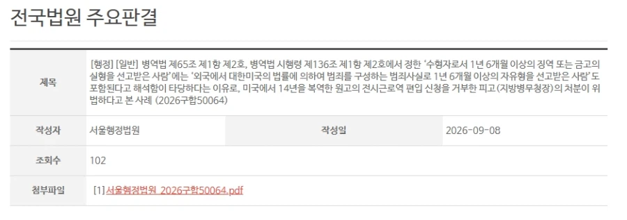

https://bbs.ruliweb.com/best/board/300143/read/76606846

1. 한국인 남성 A가 어릴 때 가족들과 함께 미국으로 이민감
2. 미국 영주권을 딴 상태로 미국에서 폭행강도로 징역 14년 살고 추방됨
3. 한국에 돌아오니 신검 3급, 단 사정고려 공익판정 받음
4. A씨 - 미국에서 깜빵생활 했으니 면제가 맞다
vs
병무청 - 한국에서 깜빵가야 면제다
5. 법원 -
외국과 한국 법이 다르기에 병역면제의 수단으로 이용할 수도 있어
모든 외국 수형생활을 인정하진 않는다.
그런데 미국에서 폭행강도하고 징역14년 받은건
한국에서도 인정받을 수 있는 범죄고 그런 놈을 군대에 끌고가는건
군인 질적 문제도 발생하니까
이번 사례는 면제가 맞다.
그런거군 설명 고마워